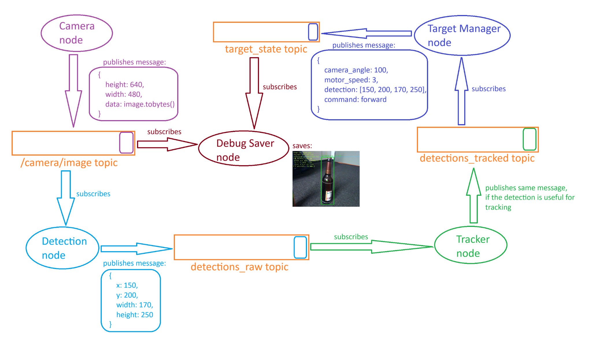
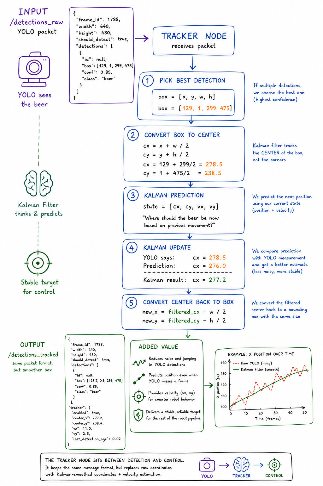
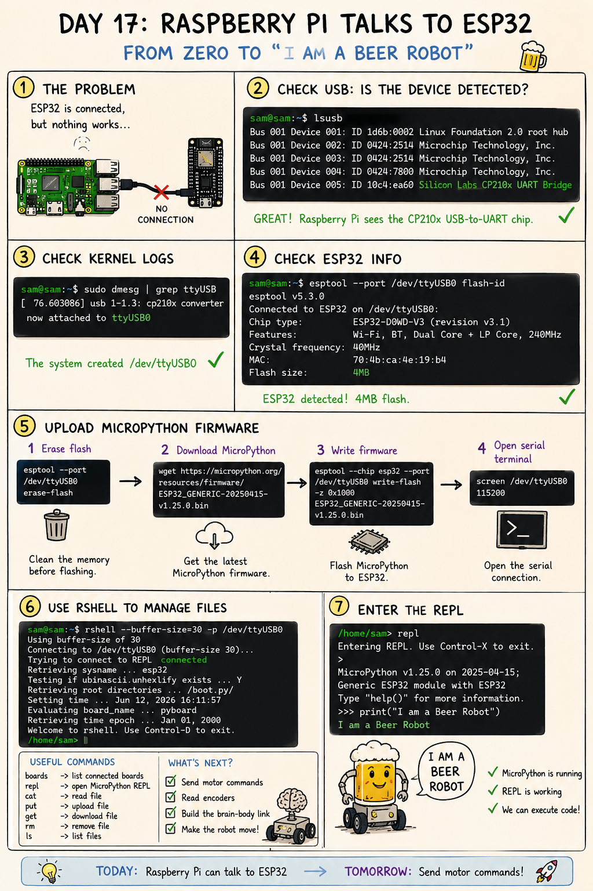
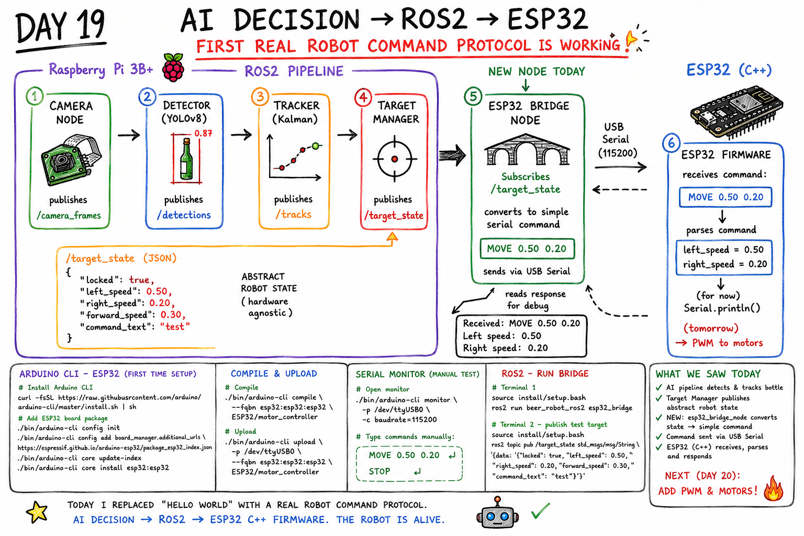
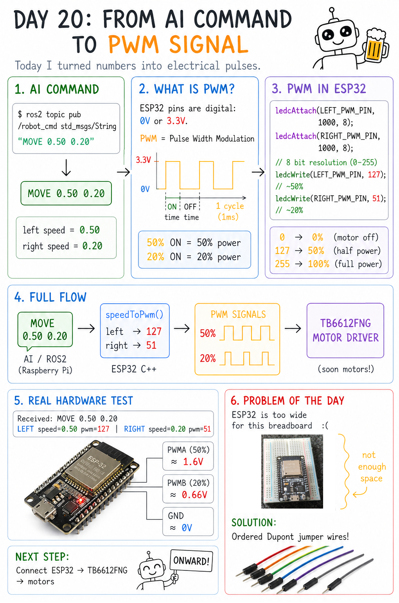

Build journey
From zero to “I am a beer robot”
A day-by-day record of turning a software project into a physical robot:
vision, ROS2, tracking, embedded control, and motor commands.
Earlier milestone
ROS2 architecture — splitting the robot brain into nodes
This diagram shows the first clean software architecture: camera frames are published,
the detector node turns images into raw detections, the tracker node smooths them,
and the target manager publishes a higher-level target state.
The important shift: instead of one huge Python script, the robot becomes a modular ROS2 system.

Day 14
Kalman tracking — the robot learns to predict
YOLO gives noisy boxes. The tracker node converts the box to its center, predicts where the beer
should be next, compares that prediction with the camera measurement, and publishes a smoother target.
This made the detection stream useful for control: less jumping, better velocity estimate,
and a more stable target for the next node.

Day 17
Raspberry Pi talks to ESP32
The problem was simple but important: the Raspberry Pi needed to see the ESP32 over USB and communicate
with it reliably. I checked USB detection, kernel logs, ESP32 flash info, flashed MicroPython,
and opened the REPL.
The milestone: the high-level computer can now talk to the low-level controller.

Day 19
AI decision → ROS2 → ESP32 command protocol
This day replaced “hello world” with a real robot command protocol. The ROS2 target manager publishes
an abstract robot state, the ESP32 bridge node subscribes to it, converts it into a compact serial command,
and sends it to ESP32 C++ firmware.
The robot does not just detect anymore. It starts producing commands that hardware can understand.

Day 20
From AI command to PWM signal
The AI command MOVE 0.50 0.20 becomes left and right motor speeds.
ESP32 converts those numbers into PWM duty cycles, for example 50% and 20% power,
which later drive the TB6612FNG motor driver.
The real lesson: software decisions must eventually become electrical pulses.
